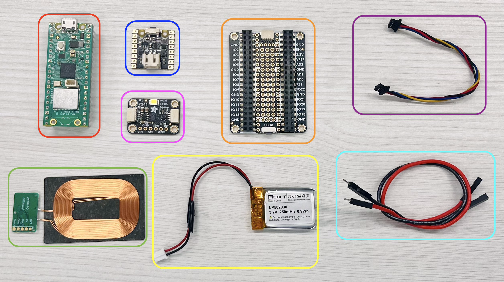
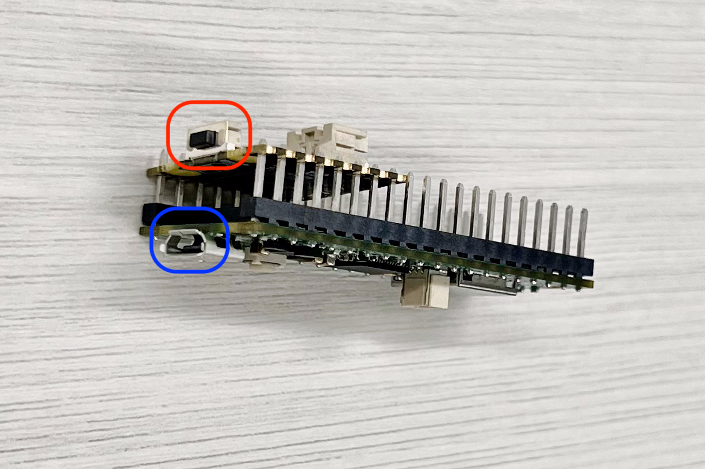

Getting started guide for wireless color sensor#
Overview#
This documentation provides a guide to assemble and test a color sensor package with a wireless charging port that could be implemented to the OT-2 liquid handling robot. Following is a video of liquid color matching demo run on OT-2 with this wireless color sensor:
(Youtube link to be added)
The estimated time of the hardware assembly is around:
Prerequisites#
This documentation assumes that readers have completed Course 1: Hello World and possess basic knowledge of electronic soldering and wiring techniques.
Bill of materials#
Electronic parts:#
Sensor Package:

Wireless charging port (Dual charging):

Mirco-USB to USB Type-A cables (1 short and 1 long)
Power supply (5V 2A)
3D printed parts:#
Sensor package:

Microcontroller backboard
Sensor stand
Sensor package main enclosure
Wireless Charging port:

Enclosure A side
Enclosure B side
Base
Transmitter supports (2x)
All the 3D printing files can be found in this link. If your 3D printer is Bambu Lab series, project files are available for BambuStudio.
Tools:#
Required:

Phillips-head #0 screwdriver
M2.5-10mm screws and M2.5 hex nuts (4x each)
Painter’s tape
Soldering set (Photo below)
Nice to have:
Tools to remove 3D printing supports and deburr surface
Multimeter for electronic connection troubleshooting

Hardware assembly:#
Preparation / Before you begin assembling:#
(Note: photos will be added for each step starting from here)
3D printed parts preparation:#
Remove all printing supports from the 3D-printed parts. Deburr all the supported surface, especially heighted areas (inner walls of the sensor package and those of the charging port enclosure A/B) that will be used for assembly.

Electronic parts soldering:#
LipoSHIM:
Place the LipoSHIM on the back of the PicoW, ensure the power button of the LipoSHIM and the micro-USB port on the PicoW are on the same side.

Solder 8 pins on each row on the PicoW.

You may connect the PicoW to a micro-USB power supply and use the power button to check the soldering connection; the white LED indicator on the LipoSHIM should light up.

Battery connnector:
If the polarity of your battery 2-pin JST connector is opposite to that of the LipoSHIM:

Warning
Warning: Never connect your battery to PicoSHIM with wrong polarity!!
You can correct it by cutting off the connector, swapping the wires, and then resoldering them to match the correct polarity.

Wireless charging unit:
Solder a jumper wire to the GND pad and another to the C1+ (or C2+) pad on the receiver board.


Connect the transmitter to a power supply via USB cable and place the receiver on top of the transmitter (coils faced with coils). Check if the blue LED charging indicator on the transmitter board lights up. You may use a multimeter to measure the voltage between the two jumper wires; the reading should be approximately 5V.

Dual charging connection check:#
You may check the connection of the dual wireless charging setup before start assembling. Use the short micro-USB/USB Type-A cable to connect both transmitters and connect the transmitter that has a free micro-USB port to a power supply. Test the receiver with the same procedure above for the wireless charging unit, the receiver should give a voltage reading of approximately 5V on each transmitter.
Assembling:#
Sensor Package assembling:#
Connect battery to Picow and LipoSHIM assembly:
Ensure the battery connector’s polarity matches the +/- markings on the LipoSHIM. Connect the battery to the LipoSHIM with the JST connector. Adjust the wire of the battery to through a row of pins on the PicoW.
Test connection: Press the button on the LipoSHIM to power on the PicoW; the white LED indicator on the LipoSHIM should light up. Connect the PicoW to a power supply via the micro-USB port; the red LED charging indicator on the LipoSHIM should also light up.
Power off and disconnect the power supply before proceeding with following steps.
Mount PicoW on Picowbell:
Place the PicoW on the top of the Picowbell sockets; the micro-USB port on PicoW should be at the same side as the STEMMA QT port on Picowbell. Carefully align the pins and press down the PicoW to secure it onto the Picowbell.
Connect wireless charging receiver to Picowbell:
Connect the GND jumper wire from the receiver to the GND socket (third on the right) on the Picowbell.
Connect the positive jumper wire to the VBUS socket (first on the right) on the Picowbell.
Place the receiver on the powered transmitter, the red LED indicator on LipoSHIM and the blue LED indicator on the transmitter should light up.
Connect AS7341 to Picowbell:
Connect AS7341 to Picowbell with a STEMMA QT wire. Turn on the Picow (using the button on the LipoSHIM), the green LED indicator on AS7341 should light on.
Test the color sensor (software testing should come in here)
Assemble Picowbell to the backboard:
Align the assemble holes on Picowbell to those on the backboard, ensuring that the micro-USB port on Picow is positioned on the side of the backboard’s opening slot. Secure the screws and nuts with a screwdriver.
Place sensor stand to the main enclosure end:
The sensor stand is a thin board with four spikes, designed with a thinner edge and a thicker edge. Position the sensor stand with the thinner edge close to the opening of the main enclosure and spikes on the top. Insert it into the sensor end of the main enclosure.
Secure the color sensor to the stand:
Face down the AS7341, with the yellow square on AS7341 close to opening of the main enclosure, align the assemble holes with four spikes, secure AS7341 to the stand.
Place wireless charger receiver on the inner wall of the enclosure and secure with painter’s tape.
Aligning the sliding tips on both ends of the backboard to the sliding slot on the main enclosure, assemble the backboard to the main enclosure.
Dual Charging port assembling:#
Join the A and B sides of the charging port enclosure, aligning them properly, and secure both parts together.
Plug the short micro-USB cable into the micro-USB port on one transmitter. Place the transmitter onto the transmitter support with the coils facing outward. Route the coil wire down from the thinner side of the support. Insert the transmitter support into the port enclosure assembly, ensuring there is no gap between the transmitter and the wall of the sensor slot.
Thread the long micro-USB cable through the square hole into the charging port assembly with the microusb head.
Place another transmitter on the transmitter support with the coils facing outward. Route the coil wire down from the thicker side of the support through the routing slot. Insert the transmitter support into the port enclosure assembly, ensuring there is no gap between the transmitter and the wall of the sensor slot.
Connect the short USB cable to the USB type-A port on the second transmitter. Connect the long micro-USB cable to the micro-USB port of the second transmitter. If you find any difficulties with cable connections, try swapping two transmitters to rearrange cable.
Connect the long cable to a power supply. The LED indicators on both transmitters should light up in the following sequence: blue, red, blue, and red. If either indcator does not flash, you may check the cable connections.
Arrange the cables inside the enclosure and assemble the base board to the port enclosure. Place the sensor package on the slot of the charging port, the red indicator on the sensor package should light up.